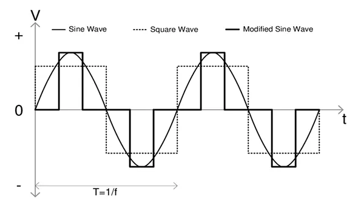

Ao buscar um nobreak para proteger seus valiosos equipamentos eletrônicos, você provavelmente já se deparou com termos como "senoidal puro", "senoidal modificado" ou "senoidal por aproximação (PWM)". Mas o que exatamente isso significa e qual a real importância para seus dispositivos? A Starnew Informática, sua especialista em soluções de energia em Salvador, descomplica essa questão para você!
Entender a forma de onda que um nobreak entrega quando está operando em modo bateria é fundamental, especialmente para equipamentos mais sensíveis ou com fontes de alimentação modernas. A escolha errada pode não apenas comprometer a proteção, mas até mesmo danificar seus aparelhos.
O que é a Forma de Onda de um Nobreak?
A energia que recebemos da concessionária em nossas tomadas possui uma forma de onda chamada "senoidal pura". É uma curva suave e contínua, ideal para o funcionamento de qualquer equipamento eletrônico. Quando um nobreak entra em modo bateria (durante uma queda de energia), ele precisa converter a energia DC (corrente contínua) da bateria de volta para AC (corrente alternada) para alimentar seus dispositivos. A qualidade dessa conversão define a forma de onda de saída.
Nobreak de Onda Senoidal Pura: A Proteção Ideal
Como o nome sugere, um nobreak de onda senoidal pura (Pure Sine Wave - PSW) entrega uma energia com forma de onda idêntica ou muito próxima à fornecida pela rede elétrica. Essa é a forma de energia mais limpa e estável que seus equipamentos podem receber.
Vantagens do Senoidal Puro:
- Compatibilidade Universal: Funciona perfeitamente com TODOS os tipos de equipamentos eletrônicos, sem exceção.
- Ideal para Equipamentos Sensíveis: Indispensável para servidores, equipamentos médicos e de laboratório, sistemas de áudio e vídeo de alta fidelidade, e qualquer dispositivo com motores ou fontes de alimentação com PFC Ativo (Correção do Fator de Potência), comuns em computadores modernos e consoles de videogame.
- Menor Ruído e Aquecimento: Equipamentos alimentados por onda senoidal pura tendem a operar de forma mais silenciosa e com menor aquecimento.
- Maior Vida Útil dos Equipamentos: A energia limpa e estável reduz o estresse nos componentes internos dos seus aparelhos.
Desvantagem:
- Custo Mais Elevado: A tecnologia para gerar uma onda senoidal pura é mais complexa, o que geralmente reflete em um preço maior.
Nobreak de Onda Senoidal Aproximada (Modificada ou PWM)
Também conhecidos como nobreaks de onda senoidal modificada, PWM (Pulse Width Modulation) ou "degrau", esses modelos geram uma forma de onda que tenta imitar uma senóide através de uma série de "degraus" quadrados. É uma solução mais econômica, mas com limitações.
Vantagens da Onda Aproximada:
- Custo Mais Acessível: São geralmente mais baratos que os modelos senoidais puros.
- Adequado para Cargas Resistivas Simples: Podem funcionar bem para equipamentos menos sensíveis, como lâmpadas incandescentes (embora raras hoje em dia), carregadores de celular simples e alguns tipos de motores básicos.
Desvantagens e Riscos:
- Incompatibilidade com Equipamentos Sensíveis: Muitos dispositivos modernos, especialmente aqueles com fontes chaveadas com PFC Ativo (a maioria dos computadores, videogames, TVs modernas), podem apresentar mau funcionamento, ruídos, superaquecimento ou até mesmo não ligar com uma onda aproximada.
- Possíveis Danos a Longo Prazo: Mesmo que um equipamento funcione inicialmente, a energia "quadrada" pode causar estresse adicional aos seus componentes internos, reduzindo sua vida útil.
- Ruído em Equipamentos de Áudio/Vídeo: Pode causar interferências e zumbidos em sistemas de som e imagem.
Qual Escolher para Sua Empresa? A Starnew Recomenda!
A decisão entre um nobreak senoidal puro e um de onda aproximada depende diretamente dos equipamentos que você precisa proteger:
- Para Servidores, Workstations de Alto Desempenho, Equipamentos de Rede Críticos, Equipamentos Médicos/Laboratoriais, Sistemas de Áudio/Vídeo Profissionais e qualquer dispositivo com fonte PFC Ativo: A escolha é clara e inequívoca: **NOBREAK DE ONDA SENOIDAL PURA**. O investimento inicial maior é compensado pela segurança, compatibilidade e longevidade dos seus equipamentos.
- Para Computadores Domésticos Antigos (sem PFC Ativo), Iluminação de Emergência Simples (não LED dimerizável), Pequenos Eletrodomésticos com Motores Simples (verificar manual): Um nobreak de onda senoidal aproximada PODE ser uma opção, mas sempre verifique a compatibilidade no manual do seu equipamento.
Atenção Starnew: Com a crescente sofisticação das fontes de alimentação em equipamentos modernos, a recomendação geral, especialmente para ambientes empresariais, pende cada vez mais para os nobreaks de onda senoidal pura para garantir a máxima proteção e evitar dores de cabeça.
Ainda com Dúvidas? A Starnew Informática Ajuda Você!
Escolher o nobreak certo é um passo fundamental para a segurança dos dados e a continuidade das operações da sua empresa. Se você está em Salvador ou região e precisa de orientação para identificar a melhor solução de energia, seja para compra ou locação, conte com a expertise da Starnew Informática.
Nossos especialistas estão prontos para analisar suas necessidades, dimensionar corretamente a potência e o tipo de onda ideal para seus equipamentos, oferecendo as melhores opções das marcas SMS, NHS e Ragtech, das quais somos assistência técnica autorizada.
Proteja seu investimento e garanta a tranquilidade do seu negócio. Fale conosco hoje mesmo e solicite uma consultoria!